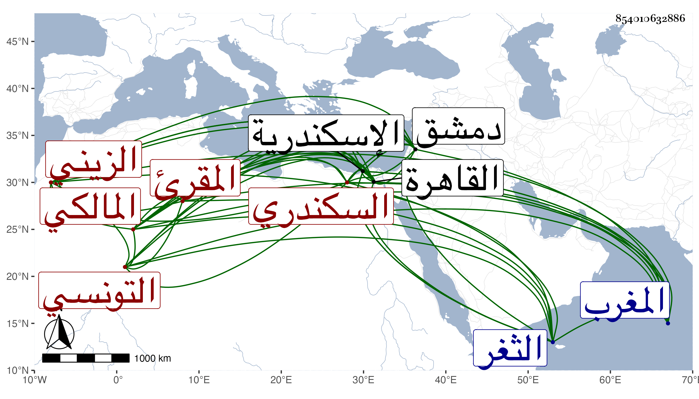

0902Sakhawi.DawLamic.ITO20230111-ara1.EIS1600.854010632886
Biography ID: 854010632886
أحمد بن عبد الرحمن بن منصور بن محمد بن مسعود بن محمد الشهاب بن الإمام المقرئ الزيني الفكير بفتح الفاء ثم كاف مكسورة بعدها تحتانية ثم راء نسبة لقبيلة من بلاد المغرب التونسي ثم السكندري المالكي الآتي أبوه ويعرف بالعسلوني بمهملتين ولد سنة تسع وثمانين وسبعمائة بالاسكندرية ونشأ بها فقرأ القرآن على أبيه وغيره وحفظ العمدة واشتغل على والده في التهذيب للبرادعي وأجاز له الزين أبو بكر المراغي . ودخل القاهرة ودمشق وغيرهما وأم بجامع الغربي بالاسكندرية خمسة وثلاثين عاما وجلس شاهدا بباب البحر منها وقتا ثم ترك وأقبل على التكسب بالتجارة ، قرأت عليه بالثغر جزءا وكان خيرا وضيئا أنشأ مات به قريب السبعين رحمه الله .
